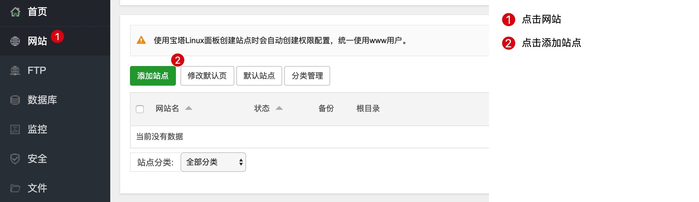
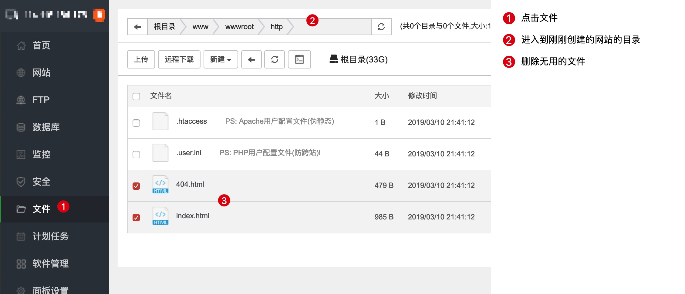
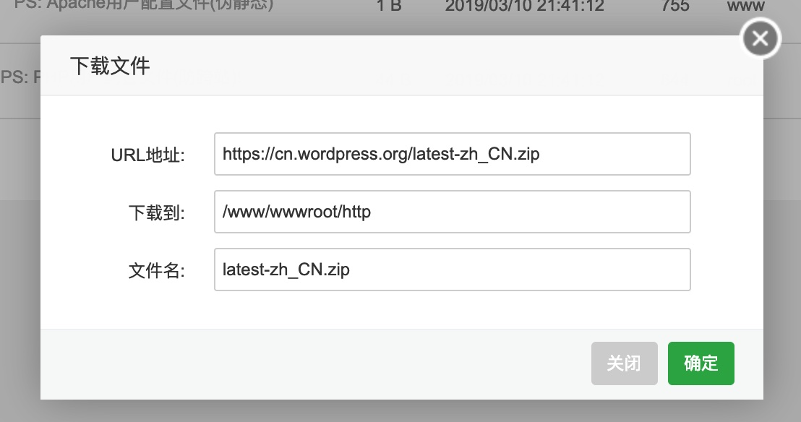
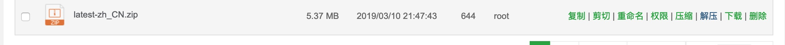
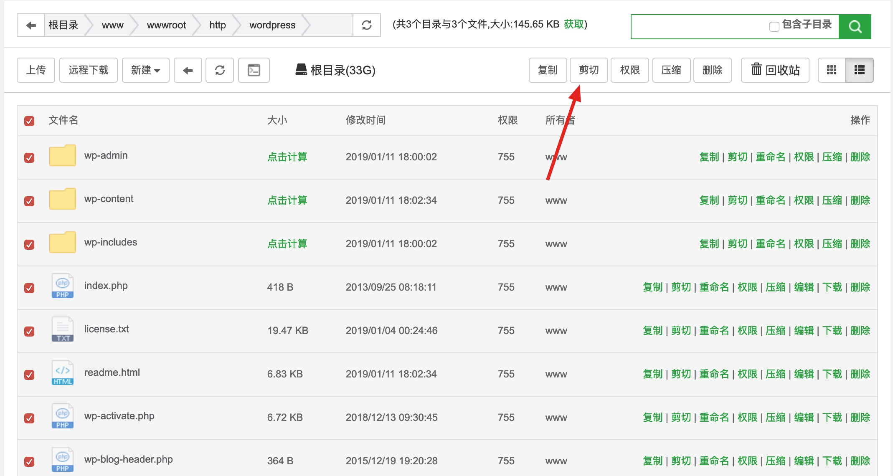
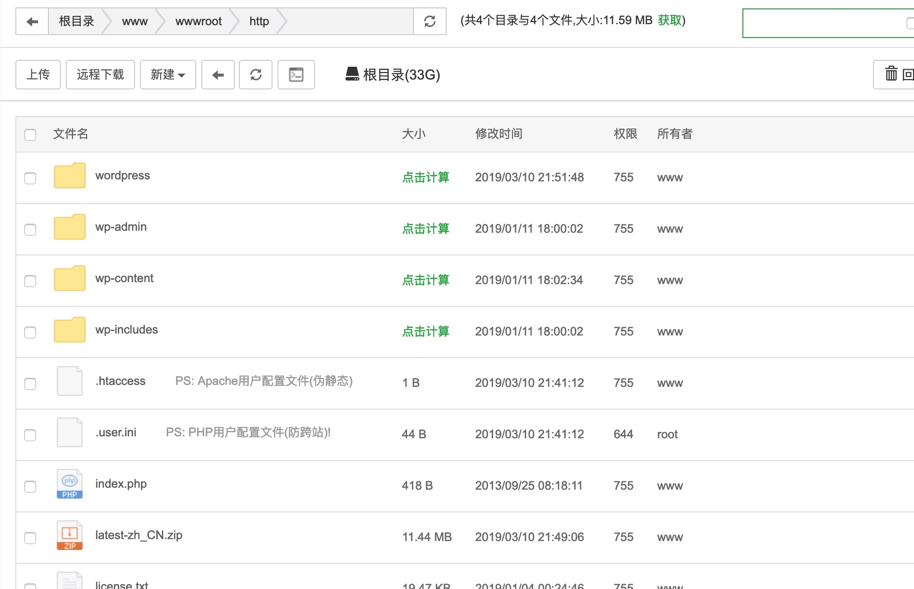
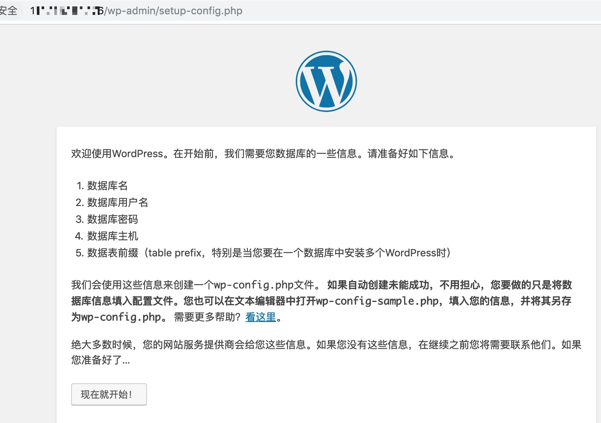
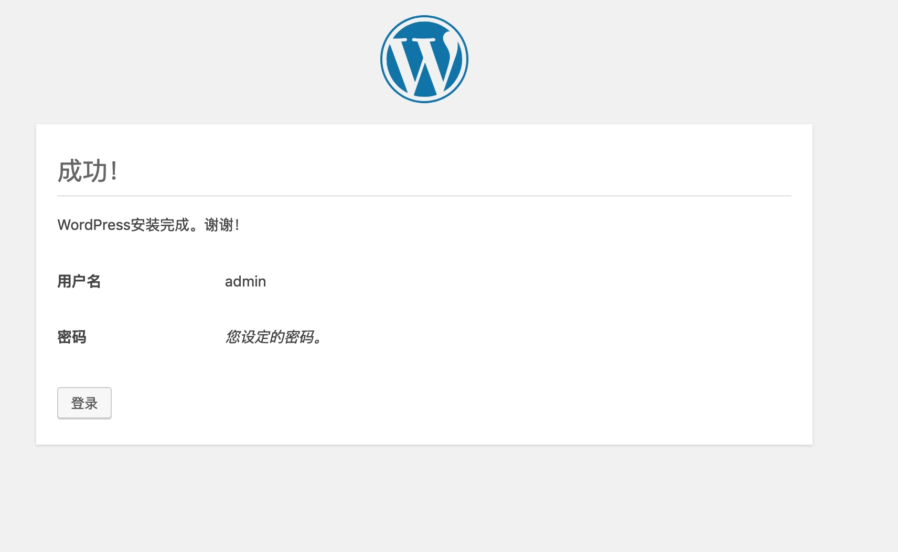

宝塔面板 - Linux 版本部署教程
在虚拟主机之后，不少人开始购买 VPS、云主机来部署自己的 WordPress 站点。在本节，我们试着使用一台 Linux 服务器来部署宝塔面板，并安装 WordPress。
学习须知
在学习本章节内容时，请确保你已经掌握了使用 SSH、Putty 连接到云服务器的能力。
如果你还不会，可以搜索 如何连接 Linux 服务器。
安装宝塔
连接上你的服务器以后，可以开始安装宝塔面板，这部分内容你可以直接搜索宝塔面板的安装过程。宝塔面板官方给出了丰富的教程。
https://www.bt.cn/bbs/thread-19376-1-1.html
创建虚拟主机
首先，我们需要创建一个虚拟主机,点击菜单中的网站，进入到添加站点。

然后在添加网站的界面输入网站信息。
创建的时候需要注意，勾选上创建 FTP 和创建 MySQL 数据库，然后点击提交，创建新的站点。
上传 WordPress 程序
宝塔面板提供了方便的在线远程下载的接口，所以我们可以非常简单的下载程序。
进入到文件的管理界面，删除掉不用的文件，

然后点击远程下载按钮，将下方的 URL 填入下载框。
https://cn.wordpress.org/latest-zh_CN.zip

然后，点击确定。稍等片刻，下载完成。
下载完成后，解压文件

解压后，你会得到一个 wordpress 文件夹，进入这个文件夹，利用剪切功能将文件复制到刚刚创建的 http 目录。

复制完成后的效果如下：

这样，我们就完成了文件的移动。接下来，访问你的域名，就可以开始安装了。

使用我们刚刚创建时的 MySQL 密码来设置我们的博客即可。

这样，我们就完成了 WordPress 的部署。